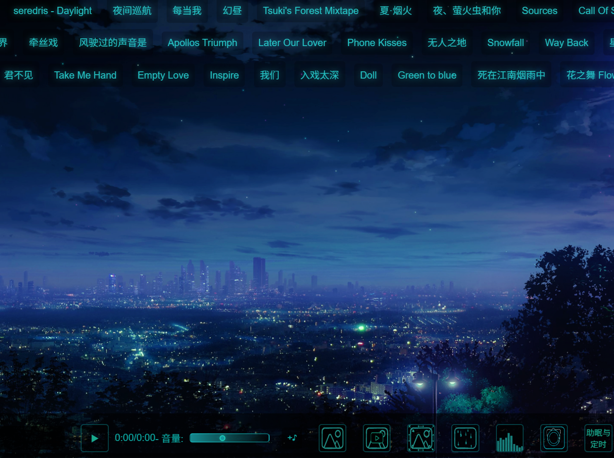
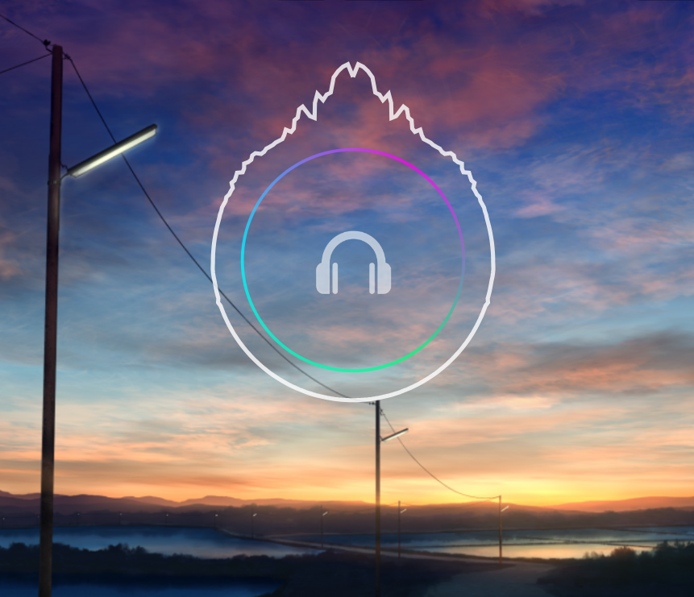
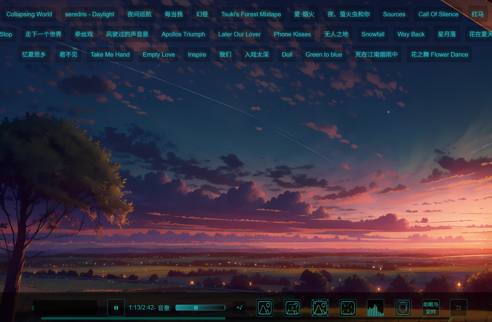
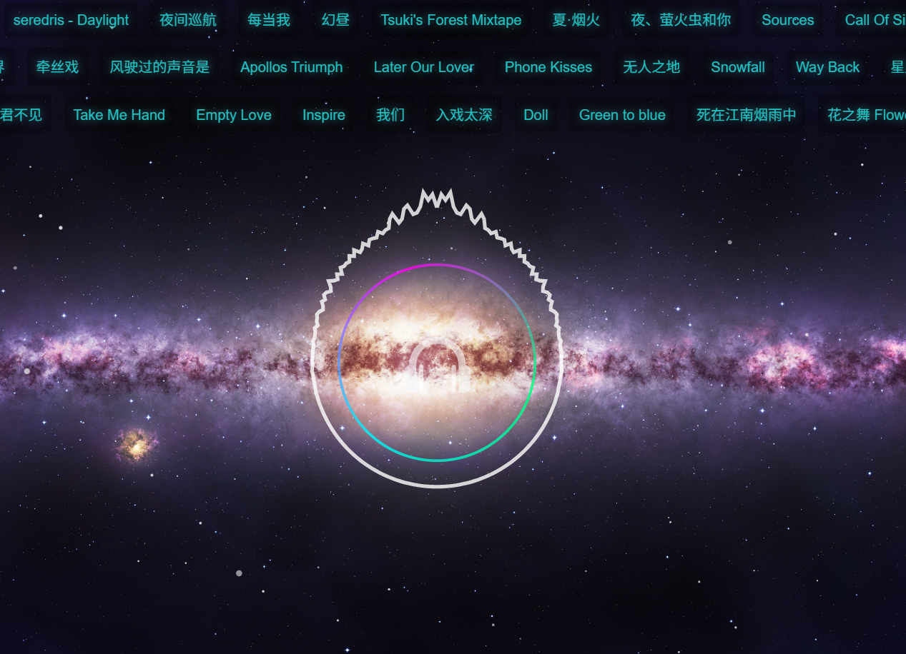

Taostar Music
Disfruta de fondos de pantalla de paisajes







Software musical diseñado para ayudarte a relajarte y descansar mejor
Incluye fondos de pantalla de paisajes anime de alta calidad, con diferentes estilos para adaptarse a distintos gustos.
Disfruta de una selección de fondos de pantalla anime relajantes en alta resolución, con estilos variados —desde paisajes luminosos y tranquilos hasta escenarios fantásticos— para ofrecer una experiencia visual pensada para el descanso.
Taostar Music = 1,5 GB — Versión principal: v6.5.0
La versión v6.5.0 será la última versión de Taostar Music. A partir de ahora, el proyecto dejará de recibir mantenimiento y actualizaciones. El proyecto ha sido declarado oficialmente finalizado y se hará de código abierto el 01/12/2026. Será accesible en GitHub.
Bilibili
Vídeo 4K de Taostar Music
Descarga aquí la biblioteca musical más reciente. Puedes añadir letras LRC, vídeos musicales y archivos de música a Taostar Music. Solo necesitas descomprimir el archivo para empezar a usarlo.
Si tienes cualquier idea o sugerencia, no dudes en comunicarte con nosotros en cualquier momento. Valoramos cada comentario y esperamos poder intercambiar ideas contigo.
Estamos abiertos a tus opiniones y comentarios. Cualquier idea, sugerencia o duda será escuchada y respondida con atención. Tu voz es fundamental para seguir mejorando y optimizando la experiencia.
huoshi.h.s.t@gmail.com
Haz clic >>> Registro de Cambios